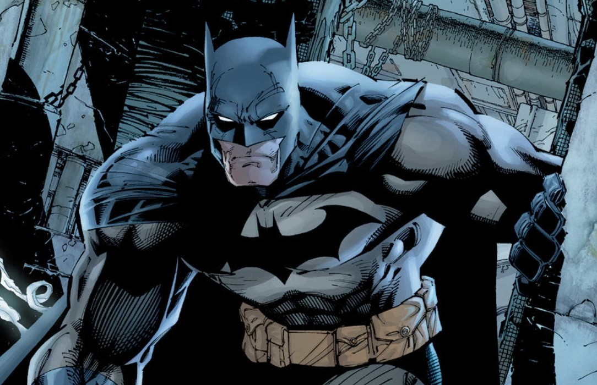

About Batman
Batman is a strong and intelligent super-hero. Unlike most superheros batman does not possess any inhuman powers but instead uses his natural strength, wealth and intellect to fight against crime. Batman secret identity is Bruce Wayne a wealthy philantropist. Batmans persona stems from his childhood when his parents were killed. Thus he adopted the batman persona to fight against crime. He uses his wealth to get himself weapons and tools. Batman lives in Gotham City where he fights against various villains
Batman ready to fight!
Characteristics
- He does not have any superpowers
- He is good at martial arts
- He likes to wear his batman costume
- He was inspired by bats
- He is good at parkour and can scale large buildings with ease
- He uses several tools such as his grappler and baterang
- He lives in his batcave
Batmans friends
Batman does not operate alone. In fact he has many friends who help him out on his quest against crime. Click on the links to know more about each one.
- His butler Alfred who manages his home and helps him manage his tasks
- His ally Robin who helps him fight some villains and is overall his buddy
- Commisioner Gordon who arrests criminals after he exposes them and takes them to him